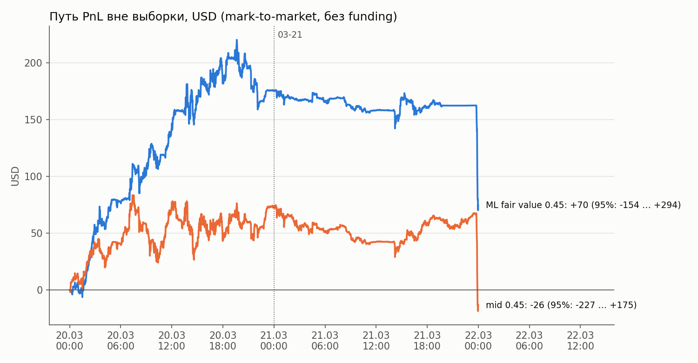
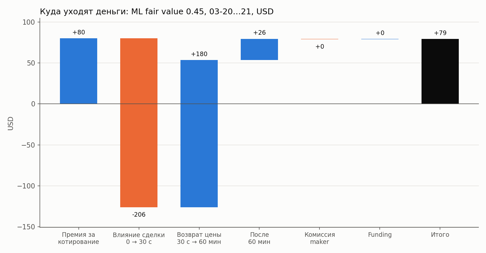
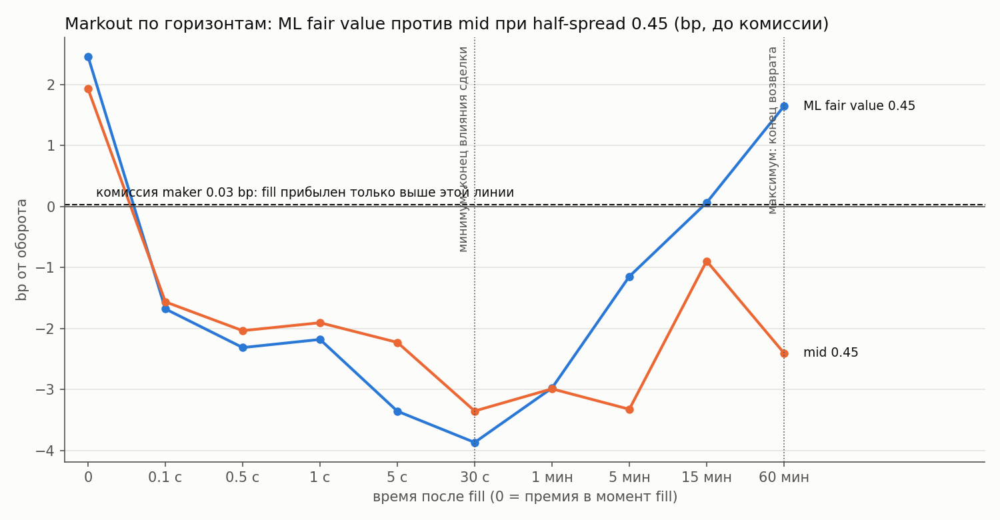
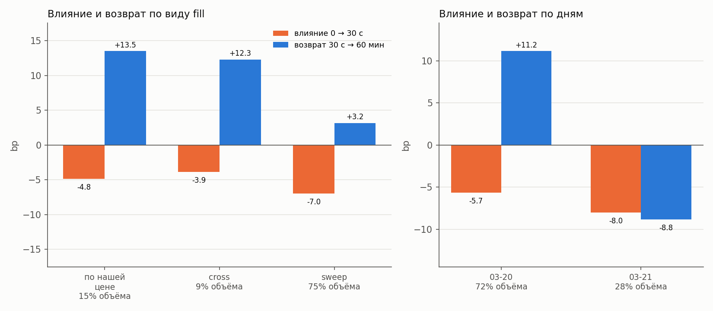

<title>ETH Perp MM Economics</title>
<link rel="preconnect" href="https://fonts.googleapis.com">
<link rel="preconnect" href="https://fonts.gstatic.com" crossorigin>
<link rel="stylesheet" href="https://fonts.googleapis.com/css2?family=IBM+Plex+Mono:wght@400;500&family=IBM+Plex+Sans+Condensed:wght@500;600&family=IBM+Plex+Sans:ital,wght@0,400;0,500;0,600;1,400&display=swap">
<style>
/* Layout: one research-note column; figures span the column; numbers in mono. */
:root {
  --bg: #f4f5f6;
  --paper: #ffffff;
  --ink: #15191e;
  --muted: #5b636d;
  --rule: #dde1e5;
  --accent: #2160b8;
  --gain: #1f6fd1;
  --loss: #c4521f;
  --figure: #fcfcfb;
  --figure-rule: #e4e3df;
  --font-display: "IBM Plex Sans Condensed", "Arial Narrow", "Helvetica Neue", Arial, sans-serif;
  --font-body: "IBM Plex Sans", "Helvetica Neue", Arial, sans-serif;
  --font-mono: "IBM Plex Mono", ui-monospace, "SFMono-Regular", Consolas, monospace;
}
@media (prefers-color-scheme: dark) {
  :root:not([data-theme="light"]) {
    --bg: #111418; --paper: #171b20; --ink: #e7eaee; --muted: #9aa3ad; --rule: #2a3038;
    --accent: #79aaf2; --gain: #6ea4f0; --loss: #f0915f; --figure: #fcfcfb; --figure-rule: #3a414a;
    color-scheme: dark;
  }
}
:root[data-theme="dark"] {
  --bg: #111418; --paper: #171b20; --ink: #e7eaee; --muted: #9aa3ad; --rule: #2a3038;
  --accent: #79aaf2; --gain: #6ea4f0; --loss: #f0915f; --figure: #fcfcfb; --figure-rule: #3a414a;
  color-scheme: dark;
}

body { background: var(--bg); color: var(--ink); font: 400 16px/1.6 var(--font-body); }
.page { max-width: 940px; margin: 0 auto; padding-inline: 20px; padding-block: 40px 72px; display: grid; gap: 56px; }
@media (max-width: 520px) { .page { padding-inline: 16px; padding-block: 24px 48px; gap: 44px; } }

h1, h2 { font-family: var(--font-display); font-weight: 600; line-height: 1.15; text-wrap: balance; margin: 0; }
h1 { font-size: clamp(2rem, 5vw, 2.9rem); letter-spacing: -0.01em; }
h2 { font-size: 1.55rem; }
h3 { font-family: var(--font-display); font-weight: 600; font-size: 1.1rem; margin: 28px 0 12px; }
p { margin: 0; max-width: 66ch; }
.eyebrow { font: 500 0.78rem/1.2 var(--font-mono); letter-spacing: 0.08em; text-transform: uppercase; color: var(--muted); }
.lede { font-size: 1.12rem; color: var(--ink); }
.muted { color: var(--muted); }
.num { font-family: var(--font-mono); font-variant-numeric: tabular-nums; white-space: nowrap; }
.gain { color: var(--gain); }
.loss { color: var(--loss); }

header { display: grid; gap: 16px; }
.meta { display: flex; flex-wrap: wrap; gap: 8px 20px; font: 400 0.85rem/1.4 var(--font-mono); color: var(--muted); }

/* The edge equation: the one figure the whole note is about. */
.equation { background: var(--paper); border: 1px solid var(--rule); border-radius: 6px; padding: 20px 22px;
  display: grid; gap: 14px; }
.terms { display: flex; flex-wrap: wrap; align-items: flex-end; gap: 10px 18px; }
.term { display: grid; gap: 2px; min-width: 0; }
.term .value { font: 500 clamp(1.5rem, 4vw, 2.1rem)/1.1 var(--font-mono); font-variant-numeric: tabular-nums; }
.term .label { font-size: 0.82rem; color: var(--muted); }
.op { font: 400 1.6rem/1.3 var(--font-mono); color: var(--muted); padding-bottom: 18px; }
.term.total .value { color: var(--ink); border-bottom: 2px solid var(--loss); }
.term.gain-total .value { border-bottom-color: var(--gain); }

section { display: grid; gap: 16px; }
.section-head { display: grid; gap: 6px; }
figure { margin: 0; display: grid; gap: 8px; }
figure img { display: block; width: 100%; height: auto; background: var(--figure); border: 1px solid var(--figure-rule); border-radius: 4px; }
figcaption { font-size: 0.82rem; color: var(--muted); }
figcaption code, td code, p code { font-family: var(--font-mono); font-size: 0.86em; }

.table-wrap { overflow-x: auto; border: 1px solid var(--rule); border-radius: 4px; background: var(--paper); }
table { border-collapse: collapse; width: 100%; font-size: 0.9rem; }
th, td { padding: 8px 12px; text-align: right; border-bottom: 1px solid var(--rule); white-space: nowrap; }
th:first-child, td:first-child { text-align: left; }
th { font: 500 0.74rem/1.3 var(--font-mono); letter-spacing: 0.05em; text-transform: uppercase; color: var(--muted); }
tbody tr:last-child td { border-bottom: 0; }
td { font-family: var(--font-mono); font-variant-numeric: tabular-nums; }
td:first-child { font-family: var(--font-body); }
tr.total td { font-weight: 500; }

.findings { margin: 0; padding: 0; list-style: none; display: grid; gap: 12px; }
.findings li { display: grid; grid-template-columns: 1.5rem 1fr; gap: 8px; max-width: 72ch; }
.findings li::before { content: "—"; color: var(--accent); font-family: var(--font-mono); }
ol.findings { counter-reset: step; } ol.findings li { counter-increment: step; } ol.findings li::before { content: counter(step) "."; }

.defs { display: grid; grid-template-columns: minmax(0, 14rem) minmax(0, 1fr); gap: 10px 20px; margin: 0; }
.defs dt { font: 500 0.88rem/1.5 var(--font-mono); }
.defs dd { margin: 0; color: var(--muted); font-size: 0.92rem; }
@media (max-width: 560px) { .defs { grid-template-columns: 1fr; gap: 2px; } .defs dd { margin-bottom: 10px; } }

pre { margin: 0; padding: 14px 16px; overflow-x: auto; background: var(--paper); border: 1px solid var(--rule);
  border-radius: 4px; font: 400 0.85rem/1.5 var(--font-mono); }
footer { border-top: 1px solid var(--rule); padding-top: 18px; font-size: 0.82rem; color: var(--muted); }
</style>

<main class="page">
  <header>
    <span class="eyebrow">ETH perpetual · 2026-03-19 … 21 · L2-снимки + сделки</span>
    <h1>ETH Perp MM Economics</h1>
    <p class="lede">Маркет-мейкер на ETH perpetual. Мы котируем на 4 тика за лучшей ценой и сдвигаем котировку по ML-прогнозу цены. На двух днях вне выборки результат стратегии около нуля. Данных мало для надёжного вывода.</p>
    <div class="meta">
      <span>ML fair value (горизонт 1 с) + inventory skew 0.05</span>
      <span>half-spread 0.45 USD, лот 1 ETH, лимит позиции 2 ETH</span>
      <span>Обучение 03-19, проверка 03-20 … 21</span>
      <span>Сравнение: котировка вокруг mid с тем же half-spread</span>
    </div>
  </header>

  <section aria-labelledby="assumptions-title">
    <div class="section-head">
      <span class="eyebrow">1 · оптимистичный сценарий</span>
      <h2 id="assumptions-title">Допущения</h2>
      <p>Результат зависит в первую очередь от двух допущений: задержки и комиссии. Для обоих мы берём лучший реалистичный случай.</p>
    </div>
    <dl class="defs">
      <dt>биржа</dt><dd>Данные похожи на поток CEX: снимок стакана каждые ~50 мс, сделки с одной меткой времени всегда одной стороны (непрерывный matching engine).</dd>
      <dt>задержка</dt><dd>1 мс на рыночные данные, 2 мс на ордер, 2 мс на подтверждение. Это colocation: сервер стоит в дата-центре биржи.</dd>
      <dt>комиссии</dt><dd>Maker 0 bp, taker 1.7 bp. Это топ-VIP уровень CEX (например, Binance USDⓈ-M VIP 9).</dd>
      <dt>исполнение</dt><dd>Модель очереди на L2-снимках. Наш ордер встаёт в конец очереди на своём уровне. Fill происходит, только если сделка дошла до нашей цены и съела очередь перед нами.</dd>
      <dt>ограничения</dt><dd>Данных 3 дня. Данные L2, а не L3: точную позицию в очереди мы не знаем. Метки времени — время приёма, поэтому задержку до биржи по данным измерить нельзя. Post-only ордера симулятор не моделирует.</dd>
    </dl>
  </section>

  <section aria-labelledby="result-title">
    <div class="section-head">
      <span class="eyebrow">2 · итог</span>
      <h2 id="result-title">Результат около нуля</h2>
      <p>За 2 дня вне выборки стратегия даёт <span class="num gain">+79 USD</span> на обороте 0.33 млн USD (+2.4 bp). 95% интервал от −154 до +294 USD включает ноль. Весь плюс сделан в первый день.</p>
    </div>
    <figure>
      
      <figcaption>Mark-to-market с шагом 1 мин, без funding. В последние 30 минут ETH падает на 3.3%, и обе стратегии теряют около 95 USD.</figcaption>
    </figure>
    <div class="table-wrap">
      <table>
        <thead><tr><th>Вариант</th><th>Fills / день</th><th>PnL, USD</th><th>bp</th><th>95% интервал, USD</th><th>t-stat</th></tr></thead>
        <tbody>
          <tr><td>ML fair value 0.45</td><td>133</td><td class="gain">+79</td><td>+2.44</td><td>−154 … +294</td><td>0.61</td></tr>
          <tr><td>mid 0.45</td><td>261</td><td class="loss">−11</td><td>−0.19</td><td>−227 … +175</td><td>−0.26</td></tr>
        </tbody>
      </table>
    </div>
  </section>

  <section aria-labelledby="edge-title">
    <div class="section-head">
      <span class="eyebrow">3 · откуда PnL</span>
      <h2 id="edge-title">Котировка теряет, возврат цены возвращает</h2>
      <p>Мы разбиваем результат каждого fill на фазы кривой markout. Минимум кривой — через 30 с, максимум — через 60 мин.</p>
    </div>
    <div class="equation">
      <div class="terms">
        <div class="term"><span class="value gain">+2.46</span><span class="label">премия за котирование</span></div>
        <span class="op">−</span>
        <div class="term"><span class="value loss">6.33</span><span class="label">влияние сделки, 0 → 30 с</span></div>
        <span class="op">+</span>
        <div class="term"><span class="value gain">5.51</span><span class="label">возврат цены, 30 с → 60 мин</span></div>
        <span class="op">+</span>
        <div class="term"><span class="value gain">0.80</span><span class="label">после 60 мин</span></div>
        <span class="op">=</span>
        <div class="term total gain-total"><span class="value">+2.44</span><span class="label">итог, bp</span></div>
      </div>
      <p class="muted">Комиссия и funding вместе меньше 0.02 bp. Влияние крупной сделки в 2.6 раза больше премии. Плюс даёт только возврат цены, пока мы держим позицию.</p>
    </div>
    <figure>
      
    </figure>
    <figure>
      
      <figcaption>У mid с той же глубиной возврат почти нулевой: +0.95 bp против +5.51 bp у ML.</figcaption>
    </figure>
  </section>

  <section aria-labelledby="unstable-title">
    <div class="section-head">
      <span class="eyebrow">4 · надёжность</span>
      <h2 id="unstable-title">Возврат цены нестабилен</h2>
      <p>Влияние сделки отрицательно каждый день. Возврат — нет: 03-20 он дал <span class="num gain">+11.2 bp</span>, 03-21 — <span class="num loss">−8.8 bp</span>. Значит, весь плюс зависит от одного дня.</p>
    </div>
    <figure>
      
    </figure>
    <p>Мы обучили отдельные ML-модели на горизонт влияния (30 с) и горизонт возврата (60 мин). Они не помогли. Модель на 30 с слабая (корреляция ~0.1), в бэктесте она даёт −47 USD. На 60 мин сигнала нет: в одном дне только ~24 независимых часа.</p>
  </section>

  <section aria-labelledby="sensitivity-title">
    <div class="section-head">
      <span class="eyebrow">5 · чувствительность к допущениям</span>
      <h2 id="sensitivity-title">Без colocation стратегия теряет</h2>
      <p>Задержка ордера влияет сильнее всего. Пока медленный ордер в пути, цена проходит через наш уровень. Тогда мы получаем fill как taker по плохой цене.</p>
    </div>
    <div class="table-wrap">
      <table>
        <thead><tr><th>Задержка: данные / ордер / подтв., мс</th><th>ML fair value 0.45, USD</th><th>mid 0.45, USD</th></tr></thead>
        <tbody>
          <tr class="total"><td>1 / 2 / 2 (база)</td><td class="gain">+79</td><td class="loss">−11</td></tr>
          <tr><td>1 / 10 / 10</td><td class="gain">+37</td><td class="loss">−35</td></tr>
          <tr><td>1 / 50 / 10</td><td class="loss">−128</td><td class="loss">−183</td></tr>
          <tr><td>100 / 150 / 50</td><td class="loss">−1 240</td><td class="loss">−1 182</td></tr>
        </tbody>
      </table>
    </div>
    <div class="table-wrap">
      <table>
        <thead><tr><th>Комиссии: maker / taker, bp</th><th>ML fair value 0.45, USD</th><th>mid 0.45, USD</th></tr></thead>
        <tbody>
          <tr><td>−0.5 / 1.5 (rebate маркет-мейкера)</td><td class="gain">+96</td><td class="gain">+18</td></tr>
          <tr class="total"><td>0 / 1.7 (база, топ-VIP CEX)</td><td class="gain">+79</td><td class="loss">−11</td></tr>
          <tr><td>1.5 / 4.5 (Hyperliquid, базовый уровень)</td><td class="gain">+30</td><td class="loss">−102</td></tr>
          <tr><td>2.0 / 5.5 (Bybit, базовый уровень)</td><td class="gain">+14</td><td class="loss">−133</td></tr>
        </tbody>
      </table>
    </div>
    <p class="muted">Без post-only убытки при большой задержке завышены: биржа отклонила бы такой ордер. Но и тогда бот теряет fills и премию.</p>
  </section>

  <section aria-labelledby="findings-title">
    <div class="section-head">
      <span class="eyebrow">6 · выводы</span>
      <h2 id="findings-title">Выводы</h2>
    </div>
    <ul class="findings">
      <li><span><strong>Данных недостаточно для точного анализа.</strong> 3 дня, 266 fills вне выборки, t = 0.61. Весь плюс сделан в один день.</span></li>
      <li><span><strong>При оптимистичных допущениях стратегия около breakeven.</strong> С colocation и комиссией maker 0 итог +79 USD, но интервал включает ноль. При задержке ордера 50 мс или при базовых комиссиях результат около нуля или в минусе.</span></li>
      <li><span><strong>Котировка сама по себе убыточна.</strong> Влияние крупной сделки (−6.3 bp) больше премии (+2.5 bp). Плюс даёт только возврат цены в течение часа, и он нестабилен.</span></li>
    </ul>
    <h3>Дальнейшие шаги</h3>
    <ol class="findings">
      <li><span><strong>Исполнение и ML.</strong> Исследовать спреды, skew по позиции и сигналу, post-only, отмену котировки перед крупной сделкой.</span></li>
      <li><span><strong>Дополнительные источники данных.</strong> Больше дней, цены ETH на других биржах (lead-lag), L3-данные для точной очереди.</span></li>
    </ol>
  </section>

  <section aria-labelledby="appendix-title">
    <div class="section-head">
      <span class="eyebrow">приложение</span>
      <h2 id="appendix-title">Формулы и методология</h2>
    </div>
    <h3>Формулы</h3>
    <dl class="defs">
      <dt>side</dt><dd>+1 для покупки, −1 для продажи.</dd>
      <dt>премия</dt><dd>side × (mid перед fill − цена fill).</dd>
      <dt>markout(h)</dt><dd>side × (mid через h − цена fill), до комиссии.</dd>
      <dt>влияние сделки</dt><dd>markout(30 с) − премия.</dd>
      <dt>возврат цены</dt><dd>markout(60 мин) − markout(30 с).</dd>
      <dt>после 60 мин</dt><dd>итог − премия − влияние − возврат − комиссия − funding.</dd>
      <dt>bp</dt><dd>USD / оборот × 10 000.</dd>
      <dt>95% интервал</dt><dd>сумма часовых приращений PnL ± 1.96 × σ(час) × √48.</dd>
    </dl>
    <h3>Методология</h3>
    <dl class="defs">
      <dt>бэктест</dt><dd>Событийный: снимки стакана, сделки и funding идут по времени. Бот видит рынок с задержкой. Биржа исполняет ордера в реальном времени.</dd>
      <dt>fills</dt><dd>По нашей цене — после сделки, которая съела очередь перед нами. Сквозь уровень — когда сделка проходит нашу цену. Taker — когда ордер при прибытии пересекает стакан.</dd>
      <dt>стратегия</dt><dd>Fair value = mid + ML-прогноз на 1 с − skew × позиция. Котировки: fair value ± 0.45 USD. Лимит позиции 2 ETH.</dd>
      <dt>ML</dt><dd>Ridge или gradient boosting (лучшая по валидации) на фичах стакана и сделок, окна 0.1–10 с. Обучение на 03-19. Глубину 0.45 и skew мы выбрали, уже глядя на 03-20 … 21.</dd>
      <dt>фазы</dt><dd>Границы — минимум (30 с) и максимум (60 мин) кривой markout. Скрипт находит их автоматически.</dd>
      <dt>комиссии</dt><dd>Fills не зависят от комиссии. Поэтому все сценарии пересчитаны по одним и тем же fills.</dd>
    </dl>
    <pre>python run_backtest.py --config configs/default.toml   # бэктест
python analytics/build_charts.py                       # графики и analytics/data/summary.json
python train_horizon_models.py                         # ML на 30 с и 60 мин</pre>
  </section>

  <footer>Все числа получены из прогонов в <span class="num">output/</span> скриптом <span class="num">analytics/build_charts.py</span>.</footer>
</main>
